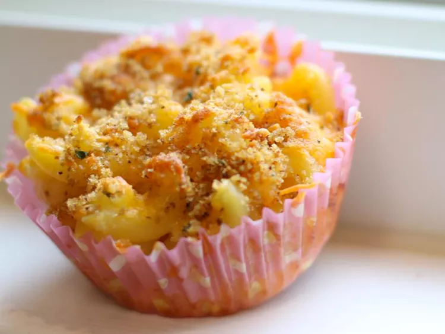

Home
Mac & Cheese Muffin

A Warm and delightful little muffin!
Ingredients
- 1/2 cup seasoned dry bread crumbs
- 2 teaspoons olive oil
- 1/2 teaspoon salt
- 2 cups uncoooked elbow macaroni
- 1 large egg, beaten
- 1 tablespoon butter
- 1 1/2 cups shredded cheddar cheese
- 1 1/2 cups shrredded mozzarella cheese
- 1 cup milk
Directions
- Preheat the oven to 350 degrees F. Grease a muffin pan with cooking spray
- Stir together breadcrumbs, olive oil, and salt in small bowl until wet
- Bring a large pot of lightly salted water to a boil. Cook pasta until tender for about 8 minutes, strain
- Stir beaten egg and butter into cooked pasta. Stir in all cheeeses and milk until well combined.
- Spoon mixture into muffin pan. Sprinkle with remaining cheddar cheese
- Bake in oven until browned for about 30 minutes. Allow to set 4 minutes upon taking out.